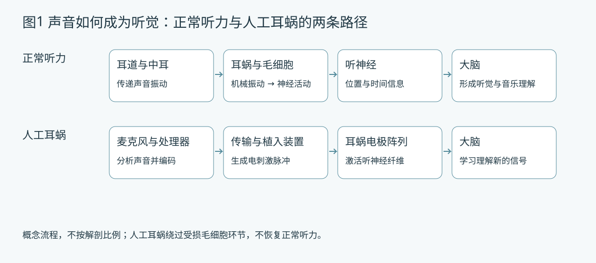
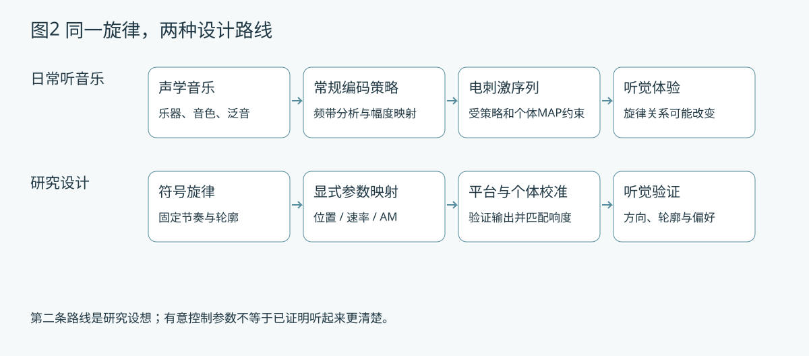

电极位置与权重中心
改变选用电极，或研究多个电极的幅度权重分配。数学重心是设计参数，不等于神经激励中心，也不能直接当作钢琴键。
从电极位置、脉冲速率和幅度调制出发，探索人工耳蜗音乐表达的新可能。
我们邀请音乐、听觉科学、临床与软件伙伴一起设计、检查和体验。方向正在形成，欢迎带着问题加入。
概念图：音乐轮廓与刺激线索的关系需要实验建立；图中电极数量仅为示意。
人工耳蜗将声音转换为电刺激，绕过受损的毛细胞，为听神经提供输入。它与正常耳蜗的精细频率分析不同：有限的电极、激励扩散、编码方式与个体差异，都可能影响音高、音色和旋律的表达。
节奏在不少简单任务中相对保留得较好。我们的初步重点因此放在固定节奏下的单侧音高与短旋律：先设计音乐关系，再直接组织刺激线索，探索日常音乐经标准编码后难以独立、精确操控的参数组合。
目标是比较表达是否清楚、轮廓是否可辨，以及体验是否有意思。这些是不同问题；我们没有预设人工刺激优于真实音乐，也尚未证明临床获益。

改变选用电极，或研究多个电极的幅度权重分配。数学重心是设计参数，不等于神经激励中心，也不能直接当作钢琴键。
在位置保持不变时，改变规则脉冲序列的间隔。脉冲每秒次数不等于听到的声学频率，速率翻倍也不保证听到八度。
固定载波速率，改变脉冲幅度包络的起伏频率或深度。AM 速率与脉冲速率是两个参数，需检查采样与响度混杂。
仅为数学与图形演示，数值范围不是人体实验建议，也不是平台可用范围。图中多电极权重表示概念分配，不表示同时刺激；本页面不播放声音、不连接设备。固定 AM 深度 0.5、显示 50 ms；竖线表示脉冲幅度，双相波形未展开。

| 条件 | 如何用于研究 | 当前边界 |
|---|---|---|
| NIC4 主要研究平台 | 探索协议允许的电极、幅度及脉冲时间组织。 | 并非无限制的逐脉冲控制；完整接口约束及实际输出仍需验证。 |
| CCiMobile 独立实现与对照 | 研究声音处理、刺激帧和接口允许的规则速率配置。 | 动态速率切换需设备验证；不能假设支持任意逐脉冲时间戳。 |
| 离线原型与分析 | 已有位置、速率、AM、组合及 ACE 代理模式、短旋律、事件检查和图形输出。 | 本次公开仓库以 Welcome 与设计讨论为起点。原型尚未接入设备，ACE 代理不是真实 ACE；声学演示不代表植入者听感。 |
NIC4 由科利耳公司提供。相关实验开展前，必须严格进行科利耳公司报批和医院伦理审查，并在获得相应批准后开展。平台提供不代表具体实验已获批准，公开研究讨论与软件开发也不替代上述审批。
当前公开页面只提供离线概念展示；尚无本项目人体实验结果。
期待从可复现的短旋律操控，逐步走向由成年植入者主动探索的音乐体验活动，最终积累研究方法、开放分析工具和共同创作的音乐作品。具体活动时间与方案尚未确定。
工程参数不自动构成音乐。我们需要一起判断哪些轮廓、音程、动机和表达值得保留，设计听起来有意义的材料，并思考如何描述陌生的音色与体验。需求尚未固定，可以从一次讨论或一个小作品开始。
客观检查能发现参数混杂与实现错误，不能证明听觉改善。后续需匹配节奏、时长与响度的对照，比较音高方向、旋律轮廓及体验评价；分析以参与者为单位，避免将重复试次误当独立人数。
孟庆林 副教授
华南理工大学
魏朝刚 主任
深圳市龙岗区耳鼻咽喉医院
两家单位共建的数字听力健康联合实验室。
音乐创作、音乐教育、音乐科技方向的老师与学生；听觉科学、临床听力、心理物理、信号处理、交互设计和软件开发伙伴。
尤其欢迎广州、深圳的朋友参与线下交流，也欢迎远程合作。合作分工和项目走向可以共同商量。
在 GitHub 留下你的研究兴趣、愿意尝试的小任务，以及你最想了解的问题。可以提出旋律材料、讨论控制线索，或改进图形与分析。请只填写愿意公开的信息。
这是寻找研究与公益音乐体验的合作者，不是招聘，也不是受试者报名入口。请勿在公开 Issue 上传个人听力病历、植入设备 MAP 或其他隐私资料。
本页面使用团队原创示意图；参考文献中的原图未随本公开版本转载。文献不代表本项目方案已经有效。